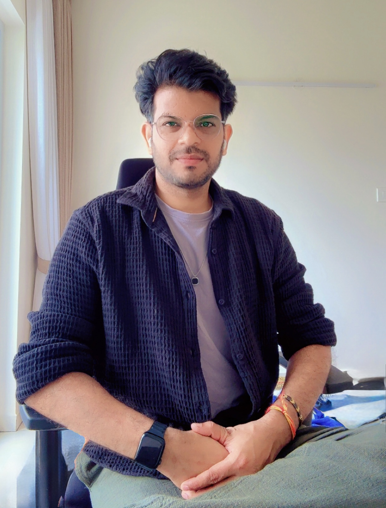

AI products · Jul 2025
AI Marketplace
A web marketplace for browsing AI products from multiple vendors and exploring options with an AI chat assistant.
Personal portfolio
A home for my professional work, videos, and writing, with a glimpse into who I am outside of work.

01 / Professional
AI products · Jul 2025
A web marketplace for browsing AI products from multiple vendors and exploring options with an AI chat assistant.
Document management · 2024–2025
A web application that brings a user’s documents into one list, where they can browse files and take action on them.
Insurance · 2021–2024
An online flow for entering property details, getting home insurance, and adding coverage for valuables.
AI tooling
A TypeScript chat client that supports Ollama, OpenAI, and Claude and uses MCP tools for browser and workflow automation.
View code on GitHubAirport operations · 2015–2017
A web application for tracking baggage and managing its movement through airports.
Education · 2013–2015
An online study platform with lecture notes and practice tests for students preparing for the IIT JEE.
02 / Personal
Hi, I’m Sonu, a filmmaker, YouTube creator, developer, and author based in Bengaluru.
I started out in software and web development, where I learned to build things from scratch, solve problems methodically, and care about how something works as much as how it looks. Over time, that same curiosity pulled me toward storytelling. Today I bring both sides together: the logic of an engineer and the eye of a creator.
On my YouTube channel, @sonukumarproductions, I make short films, music videos, tutorials, gear reviews, behind-the-scenes breakdowns, and vlogs. Some of it is about telling a story, some is about teaching what I’ve learned, and some is simply about sharing the process, including the mistakes.
I’m also the author of Back to Bihar, a book that lets me explore stories and perspectives in a different form, through the written word.
Whether I’m editing a film, debugging code, or writing a chapter, I’m driven by the same thing: making something real, and making it well.
Let’s work together. If you’re looking for video production, creative collaboration, or a developer who understands the creative side, I’d love to hear from you.
03 / Around the web